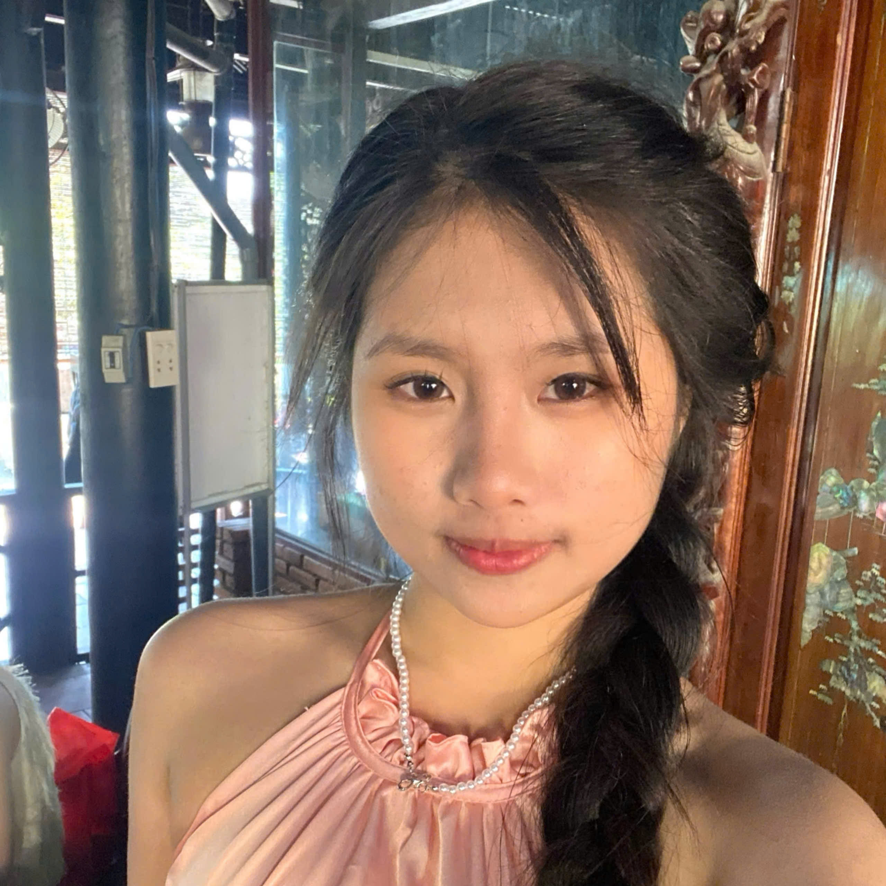

Phạm Quỳnh My
Sinh ngày: 24/03/2007
Giới thiệu
Xin chào! Mình là Quỳnh My, một người yêu thích văn hóa truyền thống và nghệ thuật cổ điển. Ngoài ra mình còn là người luôn vui vẻ, lạc quan yêu đời và mình tin rằng mọi điều trong cuộc sống điều có thể giải quết khó khăn trong tâm thế lạc quan, luôn vui tươi.
Mình còn là người hay nhìn nhận cuộc sống với những niềm vui nhỏ bé hằng ngày, những điều ấy hình thành bản thân với tính cách sâu sắc.
Trang web sẽ là cầu nối giúp các bạn hiểu hơn về mình và các thông tin chia sẽ dưới đây bao gồm: tính cách, sở thích, ...
Tính cách
- Vui vẻ, lạc quan: Mình luôn mang đến nguồn năng lượng tích cực cho những người xung quanh, mình nhìn nhận mọi vấn đề với thái độ nhẹ nhàng, tìm kiếm điều tốt đẹp ngay cả trong hoàn cảnh khó khăn. Theo mình, chỉ cần một nụ cười, một lời động viên chân thành đã có thể làm cho ngày của ai đó trở nên tươi sáng hơn.
- Hoà đồng: Bản thân luôn dễ dàng kết nối và tạo dựng mối quan hệ tốt với mọi người xung quanh, luôn cởi mở, thân thiện và sẵn sàng lắng nghe và chia sẻ giúp không khí trở nên vui vẻ và thoải mái. Sự hòa đồng không chỉ giúp mình có nhiều bạn bè mà còn tạo ra sự gắn kết với mọi người xung quanh hơn. Chính sự chân thành và thái độ tích cực của bản thân mình đã giúp mọi người yêu mến mình.
Sở thích
- Ăn uống - Mình có niềm đam mê đặc biệt với ẩm thực, không chỉ vì hương vị thơm ngon mà còn vì mỗi món ăn đều mang trong mình một câu chuyện văn hóa. Mình thích khám phá các món ăn mới, đặc biệt là việc tự tay nấu ăn và sáng tạo công thức mới cũng là một niềm vui, giúp mình thư giãn và tận hưởng trọn vẹn hương vị cuộc sống.
- Trải nghiệm - Mình luôn yêu thích những trải nghiệm mới mẻ vì chúng giúp mình mở rộng tầm nhìn và khám phá những điều thú vị trong cuộc sống. Chính sự tò mò và hiếu động khiến mình luôn muốn bước ra khỏi vùng an toàn để tận hưởng thế giới và dần hiểu hơn về bản thân theo cách riêng của mình.
Khả năng
- Hội họa, vẽ vời
- Thiết kế, sáng tạo, tạo ra những cái mới
- Tìm kiếm, tìm hiểu về những lĩnh vực quan tâm
Liên hệ
Điện thoại: 0336 841 520
Email: phamquynhmy5c@gmail.com
Địa chỉ: Xóm 9, Bình Phước, Bình Sơn, Quảng Ngãi